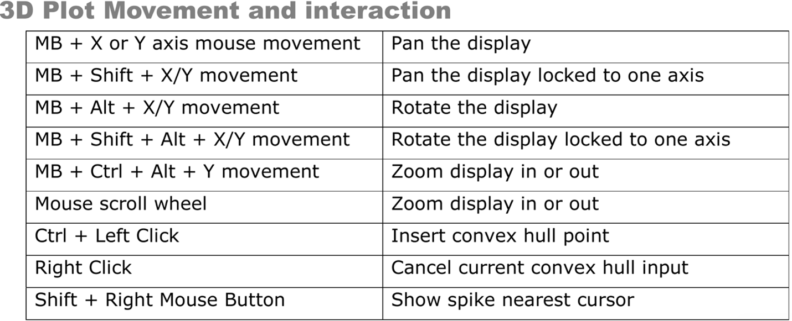
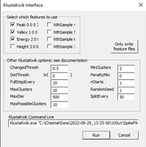

Written by Eric Press, November 11, 2022
Spike sorting database:
Sorting status to find days of recording
that are cued meaning they are ready to be sorted. Recordings are cued
for spike sorting once information about the recording has been added to
the database. This includes observations from the day’s recording,
whether the electrode position was moved from the previous recording,
and the stimulus condition for each recording. The recordings are stored
at the following location and are named/organized by date and time of
recording:Computer/LaCie (D:)/Eric’s data/nlx_recordingsFiltering the raw traces (CSCs):
Use the NlxCSCFiltering tool on any Windows machine to run a band-pass
filter on input CSC files.
Choose all the CSC files for a given recording, change the PreAppend
field to spfilt, which stands for spike-filtered and adjust the DSP
filtering fields to match the image to the right. This selects for
frequencies in the raw traces where spikes will be found, but removes
low frequency (LFP) and high frequency components of the traces.
Nix csc filter
Examine the filtered traces:
Neuraview on any
Windows machine) and determine which channels are likely to have
isolatable spikes and how many distinct spikes there might be. It helps
to keep Neuraview open when setting thresholds in the next step.Spike detection from filtered traces:
Use the CSCSpikeExtractor tool on any Windows machine to detect spikes
above or below a given µV) threshold. The units displayed in the program
will be AdBitVolts which are simply 10.92x from the µV value.
Based on the filtered traces, within CSCSpikeExtractor, set the spike
extraction properties (Spike Extraction -> Properties OR Ctrl+P) as
shown above. The Extraction Value is set to 10.92x the µV you chose by
viewing the filtered traces.
Press Ctrl+S to extract spikes from the selected file at the desired
settings. The resulting file will be placed in the extracted spikes
filter on the Desktop.
Create subfolders in the recording folder for each threshold and move the extracted spikes at each threshold into the appropriate folder. These spike-detected files will be used for spike sorting in the next step.
If it helps with detecting real spike waveforms while eliminating noise, run recordings through spike detection at multiple threshold (positive or negative) such that only all putative neurons are accounted for a minimal noise is detected.
Spike extraction properties
Spike sorting:
Open the extracted spikes in Spikesort3D on either the Neuralynx
machine or another Windows machine that has an active SpikeSort3D
licence. You can also use TeamViewer to control the Neuralynx machine
but this works much better with another Windows machine.
Press OK when the feature selection window appears. If you want to select alternate features to display, select them from the list provided. Sometimes it can be helpful to use PCA1 – 3 in isolating neurons but often it makes things more challenging.
Using the 3D Plot, examine the clustering of spikes. Follow the image
below to aid in interacting with the 3D plot (MB = the scroll wheel
button i.e. middle mouse button). You can change the features displayed
on each axis with Q/W, A/S, and Z/X respectively. Also, Ctrl+P
brings up a window that allows you to change the size and opacity of
points on the plot (I find size = 2, alpha = 0.5 works well to
improve visual definition of the clusters). If distinct clusters are
difficult to see, find the combination of 3 features that produces the
most noticeable clustering or the greatest spread of points in the
space. The features displayed in the 3D plot are shown at the top left
of the plot (i.e. X(3) Height # # # #). Use those features for the
next step. 
Run KlustaKwik (Cluster → Autocluster using KlustaKwik) and select
the 3 features that generate the most clearly separable clusters on the
3D view – often, the first 3 (Peak, Valley, Energy) do a decent
job. Change the MaxPossibleClusters to 10 before pressing Run. The
remaining settings should match the image below. 
Following calculations, use the Waveform window and the 3D plot to
group the distinct clusters into what you believe are waveforms produced
by distinct neurons. Use the number keys to highlight distinct clusters
and Ctrl+M to merge clusters together. Ctrl+C copies the selected
cluster and can be used to split a cluster into 2 if you believe
portions of the cluster belong to distinct putative neurons. This step
takes some practice. You can use Ctrl+Z to undo only one move.
Otherwise, you may need to exit without saving and start again at
step 4. Save with Ctrl+S often and click OK to overwrite the file.
Once you are satisfied with the waveforms left, note how many there are,
and whether it seems possible that some of the groups belong to the same
neuron. Consider what you know about excitable membranes to make these
decisions. Fill out the Spike Sorting Database with the information
used to reach this point. This includes, the threshold(s), # of
clusters, # of putative neurons (often 1 less than the # of clusters
because it would be a stretch to include the smallest amplitude waveform
as a distinct, separable neuron), and any else to note from performing
sorting.
Save each cluster to its own spike file
(File → Save Multiple Spike Files)
Open the separate spike files you just created, along with the original
filtered trace in Neuraview. Scroll along the recording and examine if
the sorting you performed seems believable. Do the spikes in different
rows really seem like they’re different in the filtered trace? Do some
spikes not seem like real spikes? If anything seems amiss, make the
appropriate merges in SpikeSort3D before proceding.
Export the relevant data from the sorting. Perform the following:
File → Save ASCII Timestamp Files
File → Save Multiple Spike Files
File → Save ASCII Avg Waveforms
Also, save the file itself with Ctrl+S
Lastly, bring up all the waveforms together on the waveform plot. Take a screenshot and save it to the folder where the extracted spikes (and now timestamps files) are stored.
Moving sorted files to other locations:
Once a chunk of recordings have been sorted, copy/paste the entire recording file to Eric’s orange 1TB storage drive (Lacie). Place them in the following folder:
Eric's data/sorted_recordings